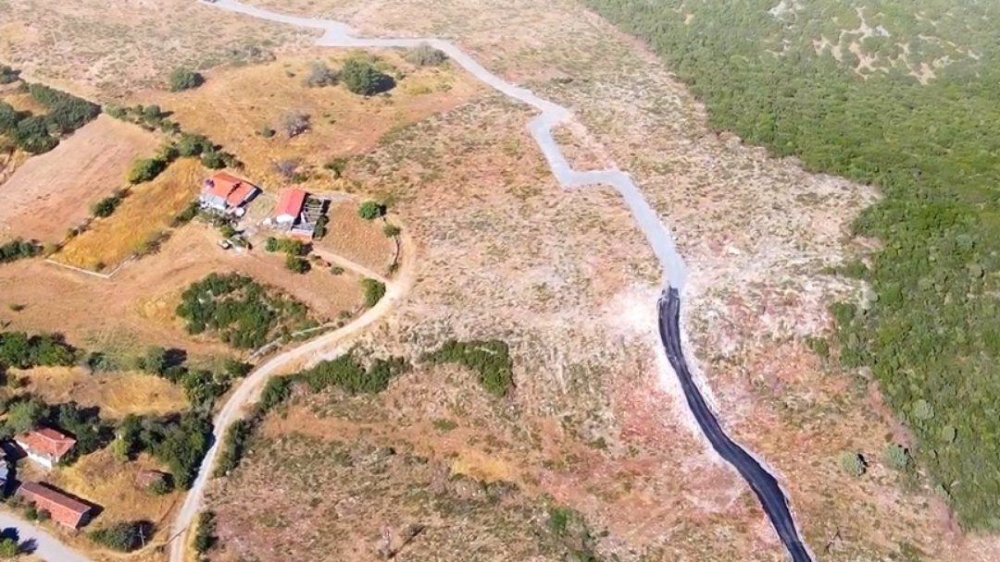

İfraz Nedir? Arsa İfrazı Nasıl Yapılır?
İfraz nedir, tevhit nedir? Büyük bir arazinin parsellere bölünmesi nasıl yapılır, ifrazlı arsa almanın avantajları nelerdir?

Arsa ilanlarında "ifrazı tamamlanmış parseller" ifadesini görmüş olabilirsiniz. İfraz, bir arazinin müstakil parsellere dönüşmesinin resmi adıdır.
İfraz nedir?
İfraz, bir parselin imar planına ve yönetmeliklere uygun şekilde iki veya daha fazla parsele bölünmesidir. Bölünme sonunda her yeni parsel kendi ada-parsel numarasını ve kendi tapusunu alır. İfrazın tersi, yani birden fazla parselin birleştirilmesi ise tevhit olarak adlandırılır.
İfraz nasıl yapılır?
- Başvuru: Arazi sahibi, belediyeye ifraz talebiyle başvurur.
- Proje: Lisanslı harita mühendisleri tarafından imar planına uygun bölünme projesi hazırlanır.
- Onay: Belediye, projeyi imar planı ve ilgili yönetmeliklere göre inceler ve onaylar.
- Tescil: Onaylanan ifraz, tapu müdürlüğünde tescil edilir ve her parsel ayrı tapuya kavuşur.
- Uygulama: Parsel sınırları ve parsel yolları araziye işlenir.
İfrazlı arsa almanın avantajları
- Müstakil tapu: Parselin tamamı sizin adınıza kayıtlı olur; hisse karmaşası yaşanmaz.
- Belli sınırlar: Parselinizin yeri, şekli ve ölçüleri resmi olarak bellidir.
- Kolay alım satım: Müstakil parseller, hisseli paylara göre çok daha kolay el değiştirir.
- Planlı yapı: İmar koşullarına uygun olarak yapı ruhsatı başvurusu yapılabilir.
Sahada ifraz nasıl anlaşılır?
İfrazı yapılmış projelerde parsel yolları açılmış, parsel köşeleri ve sınırları araziye işlenmiştir. Havadan bakıldığında araziyi bölen düzenli yollar dikkat çeker. ISKA'nın Göbel ve Bağtepe projelerinde ifraz tamamlanmış, parsel yolları açılmıştır.
İfrazın tapu tarafını daha iyi anlamak için hisseli tapu ile müstakil tapu farkı yazımıza da göz atabilirsiniz.
Sık sorulan sorular
İfraz ile tevhit arasındaki fark nedir?
İfraz bir parselin birden fazla parsele bölünmesi, tevhit ise birden fazla parselin tek parselde birleştirilmesidir.
İfrazlı arsa müstakil tapulu mudur?
İfraz tescil edildikten sonra her parsel kendi ada-parsel numarası ve ayrı tapusuyla müstakil hale gelir.